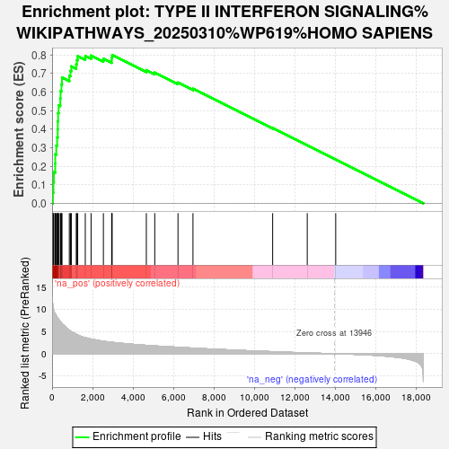

| | | Dataset | ranked_genes |
| Phenotype | NoPhenotypeAvailable |
| Upregulated in class | na_pos |
| GeneSet | TYPE II INTERFERON SIGNALING%WIKIPATHWAYS_20250310%WP619%HOMO SAPIENS |
| Enrichment Score (ES) | 0.7999701 |
| Normalized Enrichment Score (NES) | 1.8521788 |
| Nominal p-value | 0.0 |
| FDR q-value | 0.0 |
| FWER p-Value | 0.0 |
Table: GSEA Results Summary

Fig 1: Enrichment plot: TYPE II INTERFERON SIGNALING%WIKIPATHWAYS_20250310%WP619%HOMO SAPIENS
Profile of the Running ES Score & Positions of GeneSet Members on the Rank Ordered List
| SYMBOL | RANK IN GENE LIST | RANK METRIC SCORE | RUNNING ES | CORE ENRICHMENT | | 1 | IRF1 | 41 | 10.622 | 0.0574 | Yes |
| 2 | GBP1 | 68 | 10.197 | 0.1132 | Yes |
| 3 | IL1B | 89 | 9.802 | 0.1671 | Yes |
| 4 | ICAM1 | 154 | 9.046 | 0.2144 | Yes |
| 5 | PSMB9 | 157 | 8.998 | 0.2648 | Yes |
| 6 | CXCL10 | 207 | 8.611 | 0.3105 | Yes |
| 7 | SPI1 | 250 | 8.229 | 0.3544 | Yes |
| 8 | CIITA | 278 | 8.062 | 0.3982 | Yes |
| 9 | CYBB | 284 | 8.022 | 0.4429 | Yes |
| 10 | TAP1 | 299 | 7.941 | 0.4868 | Yes |
| 11 | IRF4 | 325 | 7.758 | 0.5289 | Yes |
| 12 | HLA-B | 405 | 7.276 | 0.5655 | Yes |
| 13 | CXCL9 | 419 | 7.183 | 0.6051 | Yes |
| 14 | STAT1 | 464 | 6.893 | 0.6414 | Yes |
| 15 | IRF8 | 490 | 6.777 | 0.6781 | Yes |
| 16 | IRF2 | 851 | 5.312 | 0.6882 | Yes |
| 17 | IFNGR1 | 907 | 5.065 | 0.7136 | Yes |
| 18 | IFIT2 | 951 | 4.949 | 0.7391 | Yes |
| 19 | JAK2 | 1193 | 4.384 | 0.7505 | Yes |
| 20 | IFNGR2 | 1227 | 4.315 | 0.7729 | Yes |
| 21 | IRF9 | 1266 | 4.227 | 0.7946 | Yes |
| 22 | SOCS3 | 1640 | 3.625 | 0.7945 | Yes |
| 23 | STAT2 | 1926 | 3.310 | 0.7975 | Yes |
| 24 | NOS2 | 2534 | 2.812 | 0.7802 | Yes |
| 25 | JAK1 | 2945 | 2.577 | 0.7722 | Yes |
| 26 | EIF2AK2 | 2946 | 2.576 | 0.7867 | Yes |
| 27 | REG1A | 2967 | 2.563 | 0.8000 | Yes |
| 28 | SOCS1 | 4655 | 1.891 | 0.7184 | No |
| 29 | OAS1 | 5070 | 1.761 | 0.7056 | No |
| 30 | PTPN11 | 6218 | 1.448 | 0.6511 | No |
| 31 | ISG15 | 6957 | 1.261 | 0.6178 | No |
| 32 | PRKCD | 10893 | 0.456 | 0.4053 | No |
| 33 | IFI6 | 12601 | 0.176 | 0.3130 | No |
| 34 | H4C14 | 14006 | -0.007 | 0.2363 | No |
Table: GSEA details [plain text format]
Fig 2: TYPE II INTERFERON SIGNALING%WIKIPATHWAYS_20250310%WP619%HOMO SAPIENS: Random ES distribution
Gene set null distribution of ES for TYPE II INTERFERON SIGNALING%WIKIPATHWAYS_20250310%WP619%HOMO SAPIENS